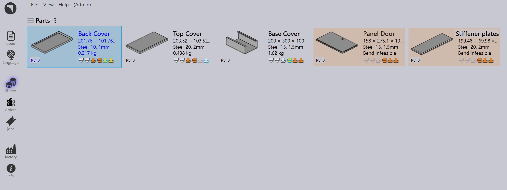

Zapisywanie złożenia
Funkcja Zapisywanie złożenia umożliwia użytkownikom eksportowanie złożeń SolidWorks i ich części składowych bezpośrednio do biblioteki części TruSmartCAM. Zapewnia to dokładne przeniesienie wszystkich części z blachy, informacji o materiałach surowych i ilości części do planowania downstream, przygotowania narzędzi i tworzenia zadań.
Ta funkcjonalność jest szczególnie przydatna do zarządzania kompletnymi złożeniami, takimi jak szafy, obudowy lub konstrukcje strukturalne, które obejmują wiele elementów z blachy.
Kroki zapisywania złożenia
-
Uruchom SolidWorks i otwórz wymagany plik złożenia.

-
Na pasku narzędzi TruSmartCAM kliknij Save Assembly. Pojawi się okno dialogowe Zapisz podzespół w Praxis, podsumowujące szczegóły złożenia.

-
Okno dialogowe złożenia zawiera następujące informacje:
-
Assembly Name - Wyświetla nazwę aktualnie aktywnego złożenia SolidWorks. Ta nazwa jest używana jako domyślna referencja dla złożenia w TruSmartCAM.
-
Łącznie detali - Wskazuje całkowitą liczbę instancji komponentów obecnych w złożeniu SolidWorks. Obejmuje to zarówno części z blachy, jak i części niebędące z blachy.
-
Detale z blachy - Wyświetla całkowitą liczbę komponentów z blachy w złożeniu wraz z liczbą unikalnych części z blachy.
-
Detale inne niż z blachy - Wyświetla całkowitą liczbę i unikalną liczbę komponentów niebędących z blachy wykrytych w złożeniu.
-
Jednostki do wyprodukowania - Określa liczbę złożeń (gotowych produktów) do wyprodukowania. Wprowadzona ilość jest używana do obliczenia całkowitych wymagań części w wynikowym zadaniu lub złożeniu w TruSmartCAM.
-
-
Po weryfikacji szczegółów kliknij OK.
-
TruSmartCAM zapisuje wszystkie części wymienione w tabeli do biblioteki części wraz z powiązanymi informacjami o materiałach. (Szczegółowe informacje o mapowaniu materiałów znajdziesz w sekcji Automatyczne rozpoznawanie materiału)

Dodatkowe opcje
Utwórz zadanie
-
Włącz tę opcję, aby utworzyć nowe zadanie TruSmartCAM bezpośrednio z wybranego złożenia, umożliwiając natychmiastowe planowanie zadań i operacje nesting.
-
Po włączeniu pojawi się okno dialogowe New Job, umożliwiające określenie:
-
Nazwy Job Reference (domyślnie: nazwa złożenia).
-
Customer i Comments (opcjonalnie).
-
Due Date, Priority i Quantity dla każdej części.
-
Dodatkowych parametrów, takich jak ustawienia specyficzne dla klienta lub wartości rotacji dla każdej części.
-
Kliknij OK, aby utworzyć i otworzyć nowe zadanie w TruSmartCAM.
-

Utwórz złożenie
Włącz tę opcję, aby zapisać złożenie i prawidłowe ilości części na stronie złożenia TruSmartCAM. W przeciwieństwie do opcji Utwórz zadanie, nie otwiera ona okna dialogowego New Job podczas procesu.


|